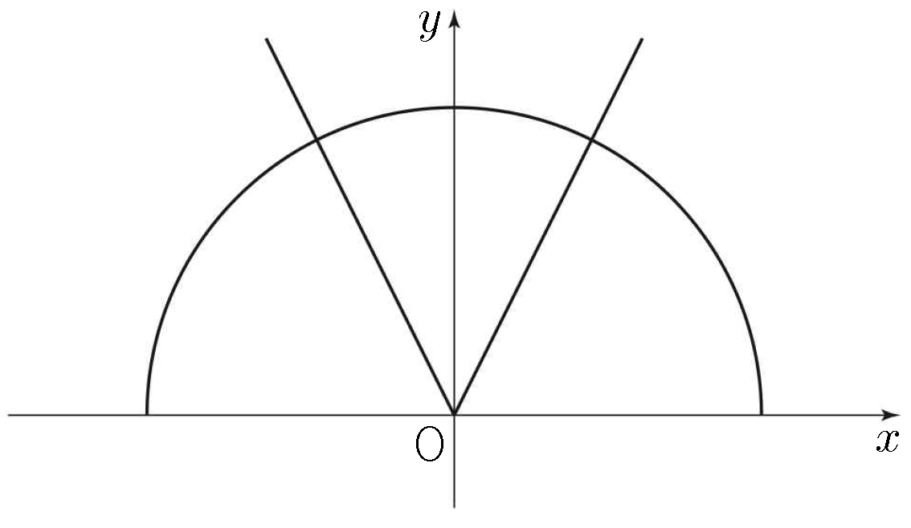

두 집합
에 대하여 좌표평면에서 집합 가 나타내는 도형을 라 하자. 양의 실수 에 대하여 직선 가 도형 와 만나는 점의 개수를 이라 할 때, 열린구간 에서 함수 은 , , 에서만 불연속이다. 의 값은? [4점]

① ② ③ ④ ⑤
㉡의 는 두 반직선 과 이야. ㉢의 직선과 만나는 점을 반직선마다 하나씩 세 보자.
주의이면 식은 풀리지만 이라 인 반직선 위의 점이 아니야. 는 두 직선이 평행해서 만나지 않아.
주의㉠의 는 인 반원뿐이야. 그런데 원 위의 점은 라서 이 직선과 만나는 점은 모두 축 위쪽에 있으니까, 원과 만나는 점을 그대로 세도 돼.
판단원과 직선이 만나는 점의 개수는 에 대한 이 이차방정식의 서로 다른 실근의 개수와 같아. 그래서 판별식의 부호로 나누는 거야.
판단직선이 와 에 함께 있는 점을 지나면 그 점을 두 번 세게 되니까 실제 개수는 하나 줄어. 그래서 겹치는 점을 지나는 을 따로 봐야 해.
그 밖의 에서는 직선이 겹치는 점을 지나지 않으니까 와 만나는 점과 와 만나는 점은 서로 달라.
분수가 거슬리니까 양변에 를 곱해서 정리하자.
는 반직선 위의 점이라 와 만나는 점으로 이미 한 번 셌어. 그래서 겹친 하나를 빼는 거야.
판별식이 이라 원과는 한 점에서 접해. 그 점 는 반직선 위의 점이기도 해서 겹친 하나를 빼.
앞의 개수를 모아 의 범위별로 표를 만들면 불연속인 곳이 한눈에 보여.
판단표의 열린구간마다 이 일정한 값이니까 거기선 연속이야. 그래서 ㉣의 불연속인 곳은 값이 바뀌는 에서만 따지면 돼.
주의에서는 함숫값과 우극한이 같아도 좌극한이 달라서 불연속이야. 한쪽만 보고 넘기지 마.